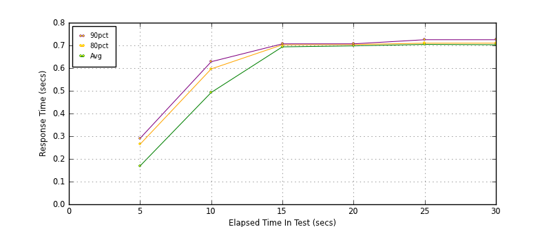
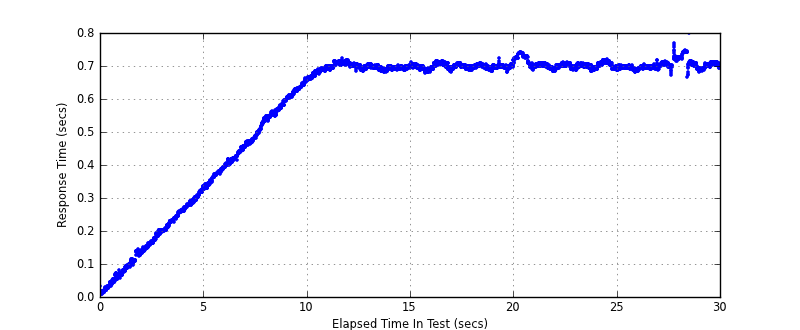
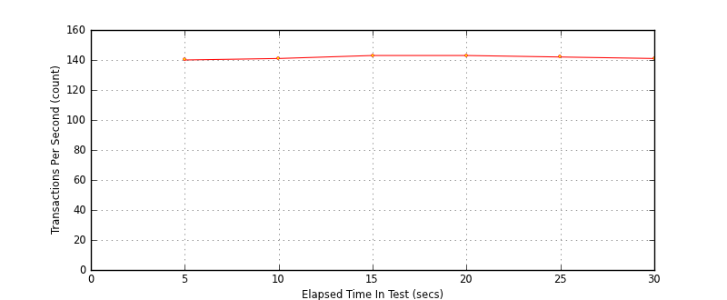

Performance Results Report
Summary
transactions: 4361
errors: 0
run time: 30 secs
rampup: 10 secs
test start: 2014-01-15 14:50:43
test finish: 2014-01-15 14:51:13
time-series interval: 5 secs
workload configuration:
| group name | threads | script name |
|---|
| user_group-1 | 100 | read_user.py |
All Transactions
Transaction Response Summary (secs)
| count | min | avg | 80pct | 90pct | 95pct | max | stdev |
|---|
| 4361 | 0.008 | 0.578 | 0.704 | 0.709 | 0.716 | 0.797 | 0.205 |
Interval Details (secs)
| interval | count | rate | min | avg | 80pct | 90pct | 95pct | max | stdev |
|---|
| 1 | 704 | 140.80 | 0.008 | 0.169 | 0.264 | 0.290 | 0.307 | 0.334 | 0.092 |
| 2 | 708 | 141.60 | 0.326 | 0.493 | 0.596 | 0.628 | 0.640 | 0.661 | 0.097 |
| 3 | 716 | 143.20 | 0.656 | 0.694 | 0.703 | 0.707 | 0.712 | 0.722 | 0.012 |
| 4 | 715 | 143.00 | 0.677 | 0.698 | 0.704 | 0.707 | 0.710 | 0.723 | 0.007 |
| 5 | 713 | 142.60 | 0.682 | 0.704 | 0.710 | 0.725 | 0.730 | 0.742 | 0.012 |
| 6 | 705 | 141.00 | 0.666 | 0.703 | 0.710 | 0.725 | 0.740 | 0.797 | 0.015 |
Graphs
Response Time: 5 sec time-series

Response Time: raw data (all points)

Throughput: 5 sec time-series

Custom Timer: get_tweets
Timer Summary (secs)
| count | min | avg | 80pct | 90pct | 95pct | max | stdev |
|---|
| 4261 | 0.007 | 0.577 | 0.703 | 0.709 | 0.715 | 0.797 | 0.205 |
Interval Details (secs)
| interval | count | rate | min | avg | 80pct | 90pct | 95pct | max | stdev |
|---|
| 1 | 704 | 140.80 | 0.007 | 0.169 | 0.264 | 0.290 | 0.307 | 0.334 | 0.092 |
| 2 | 708 | 141.60 | 0.326 | 0.492 | 0.596 | 0.628 | 0.639 | 0.661 | 0.097 |
| 3 | 716 | 143.20 | 0.656 | 0.693 | 0.702 | 0.707 | 0.712 | 0.721 | 0.012 |
| 4 | 715 | 143.00 | 0.677 | 0.698 | 0.704 | 0.707 | 0.710 | 0.723 | 0.007 |
| 5 | 713 | 142.60 | 0.682 | 0.704 | 0.710 | 0.725 | 0.729 | 0.741 | 0.012 |
| 6 | 705 | 141.00 | 0.665 | 0.703 | 0.710 | 0.725 | 0.740 | 0.797 | 0.015 |
Graphs
Response Time: 5 sec time-series
Response Time: raw data (all points)
Throughput: 5 sec time-series
